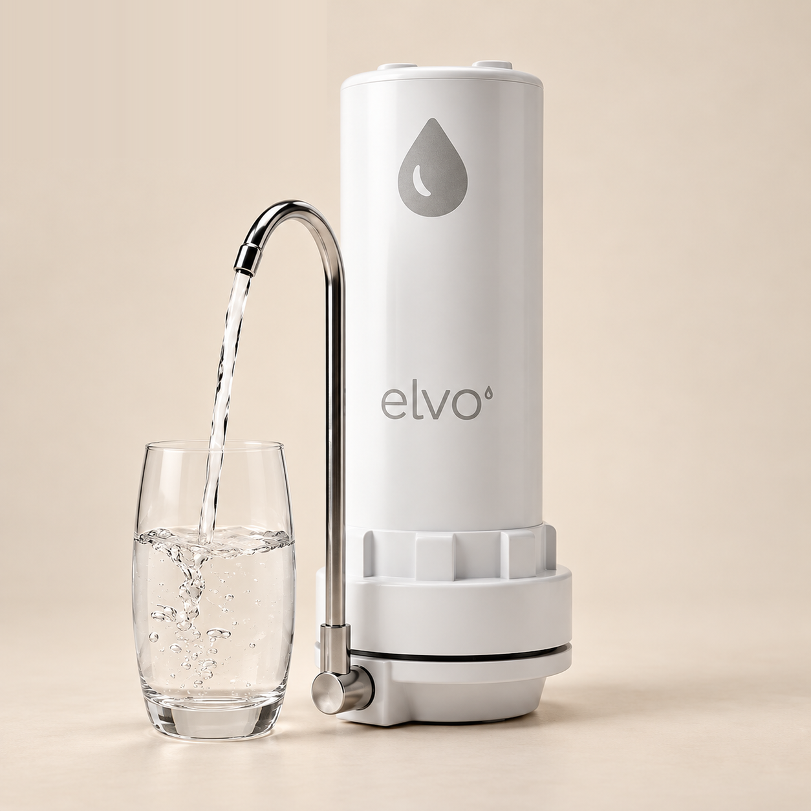
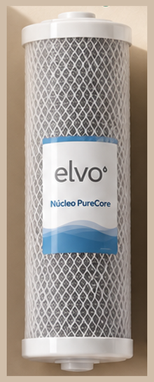
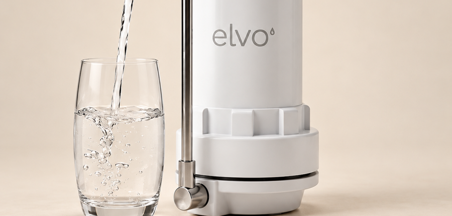

Lo instalas tú en 5 minutos. Sin electricidad, sin obras y sin gasfitero.

Antes de conectar, se retira el film del núcleo. El derivador se coloca en la boca de tu grifo. De él sale la manguera hacia el purificador, que queda sobre la mesada. La palanca del derivador decide si sale agua purificada o agua del caño.
Desenrosca el purificador con la llave que viene en la caja.

Saca el film del núcleo antes de instalar.
Enrosca el purificador de nuevo.
Primero mira si tu grifo tiene aireador.
Probablemente se conecta directo, sin jebe. Retira el aireador girándolo con la mano y quítale el jebe al derivador.
Usa el adaptador de doble rosca C que viene en la caja. El lado más grande va hacia el derivador, sin jebe.
Usa el jebe del derivador. Se ajusta o afloja con un destornillador para adaptarlo al caño.
Enrosca el derivador en la boca del grifo, directo o con la doble rosca C. Si usas el jebe, ajústalo al caño con el destornillador.

La manguera ya viene conectada entre el derivador y el purificador. Déjalo sobre la mesada, junto al grifo.
La primera vez que gires la palanca requiere un poco de fuerza.
Una vez instalado, con la palanca en horizontal, deja correr el agua por el purificador durante 10 minutos. Es la purga que activa el núcleo. Después, ya puedes usarlo.
El núcleo dura 18 meses de uso normal. Te avisamos por WhatsApp cuando toque cambiarlo.
Desenrosca el purificador con la llave que viene en la caja.
Retira el film del núcleo de repuesto.
Sin importar el lado: funciona de ambos lados.
Vuelve a enroscar el purificador.
Antes de usar, deja correr el agua 10 minutos: es la purga y activación de los filtros.
WhatsApp
929 190 100
Te devolvemos tu dinero.
1 año. Además, 30 días de prueba.
Pensado para agua de red potable. Los resultados dependen de la calidad del agua de entrada y del cambio oportuno del núcleo.